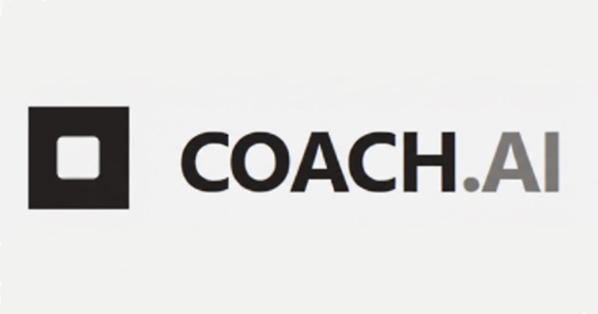

Local Simulation:
This shows how your 1200x630 image will likely be cropped/displayed by LinkedIn.
To see the real preview, deploy your changes and use the
LinkedIn Post Inspector
.

Behavioral Coach | Structure
behavioral-interview-coach.vercel.app